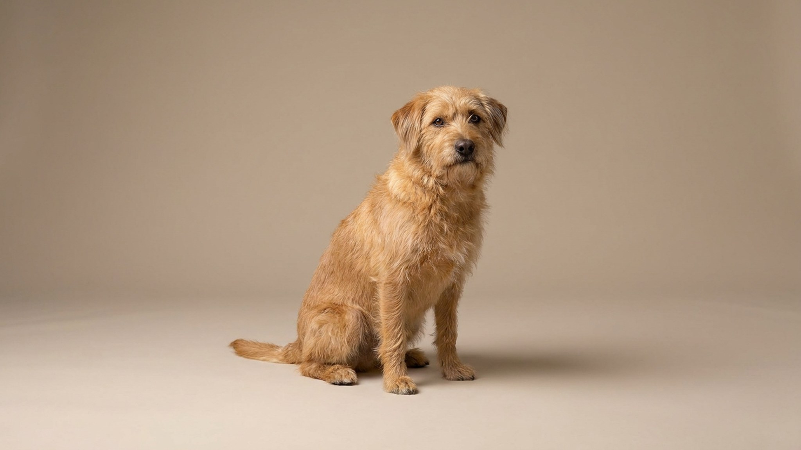

Пять секунд — и собака уже что-то подобрала с асфальта, пока вы смотрели в другую сторону. Это не каприз и не вредность: за привычкой стоит инстинкт, которому тысячи лет. Хорошая новость — его можно перенаправить. Ниже — почему так происходит, чем это опасно и конкретный план, который работает даже с упрямыми собаками.
🐾 Не уверены, что это опасно?
Опишите симптом в AnimaLife — AI-ветеринар за минуту подскажет, что в пределах нормы, а когда пора к врачу.
У собак нос — главный орган восприятия мира. Любой запах еды на земле активирует пищевой поиск: животное не рассуждает, а действует по инстинкту. Три основные причины:
На улицах городов и загородных тропах встречаются испорченные продукты, бытовые отходы и — значительно реже, но реально — намеренно разложенные приманки. Последнее особенно актуально в начале и конце сезона выгула. Что именно лежит на земле, вы не всегда успеваете проверить. Именно поэтому привычку подбирать лучше устранить полностью, не оставляя её «на контроле хозяина»: реакция собаки быстрее любого поводка. Если после прогулки вы замечаете изменения в поведении, самочувствии или аппетите питомца — это повод обратиться к ветеринару без промедления.
🐾 Питомец ведёт себя странно?
AnimaLife расшифрует поведение кошки и собаки и подскажет, что делать. Попробуйте бесплатно прямо в мессенджере.
🐾 Понравился разбор?
Подпишитесь на канал — каждый день разбираем по одному тревожному симптому у кошек и собак: что в пределах нормы, а когда пора к врачу. Подпишитесь, чтобы не пропустить разбор, который может спасти здоровье вашего питомца.
Работайте последовательно — каждый шаг усиливает следующий.
Увеличьте нагрузку: физическую (активная прогулка, игра с мячом) и умственную (нюхательные коврики, команды, апортировка). Сытая и уставшая собака меньше ищет стимулы на асфальте. Если поведение сохраняется несмотря на регулярную работу — обсудите с ветеринаром: иногда за навязчивым подбиранием стоит нехватка микроэлементов или поведенческая причина, которую специалист поможет выявить.
Материал носит информационный характер и не заменяет очную консультацию ветеринара.